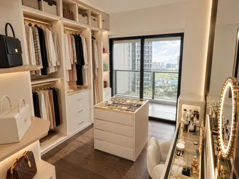
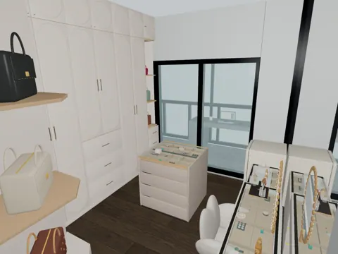
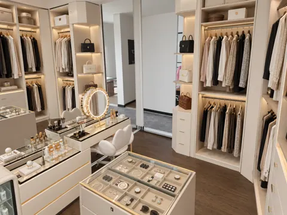
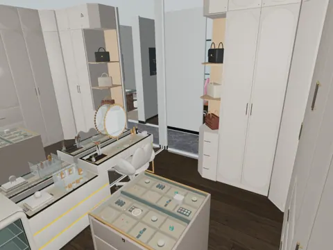
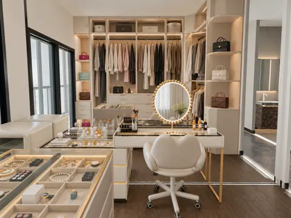
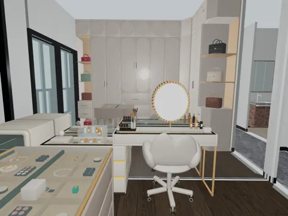
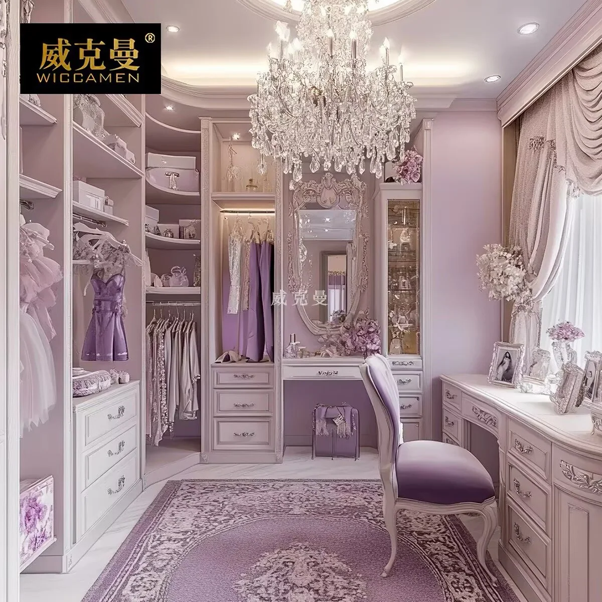
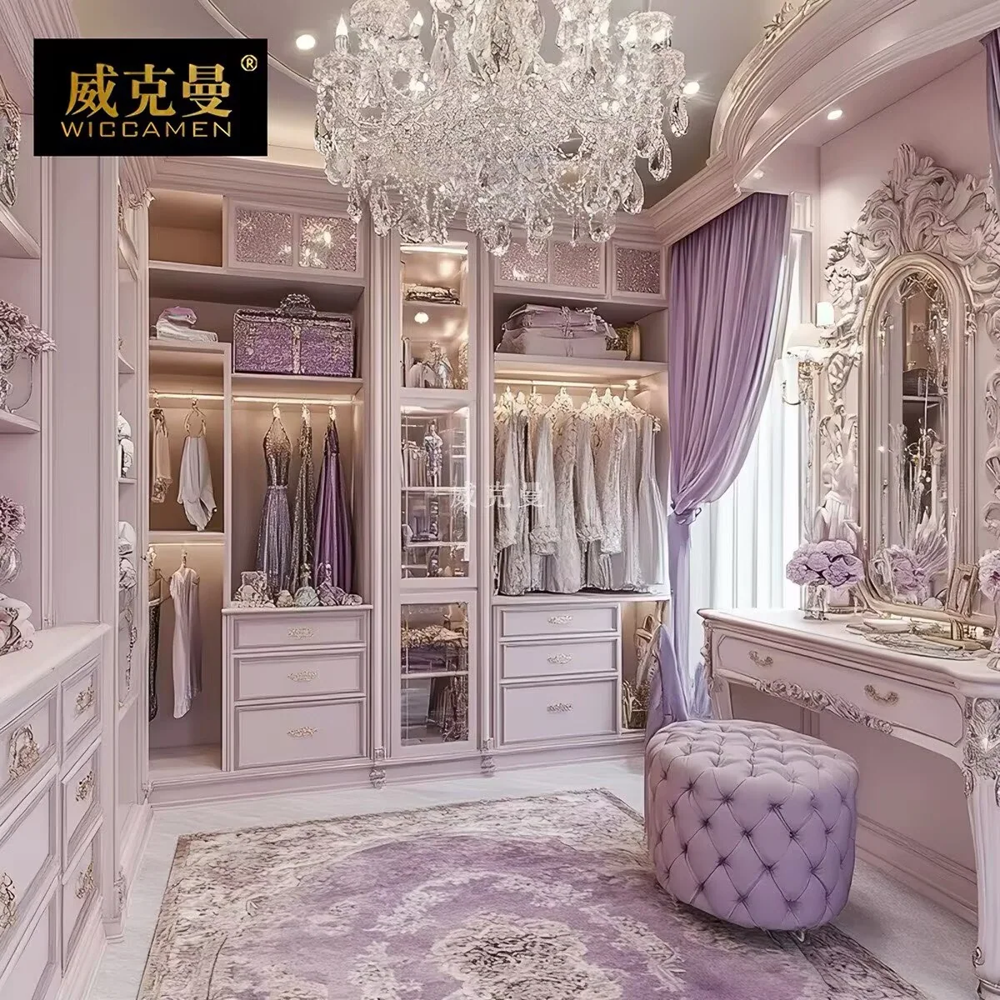

SPACE 06
06 女主衣帽间
现状、需求与预期效果，放在一起讨论。
06 女主衣帽间装修需求
所有尺寸均为参考；施工、定制、开孔和下单以现场实测、实物安装要求及确认图纸为准。列入配置不等于已经购买。
现场实拍

望向阳台方向（南）

望向门口方向（北）
DESIGN INTENT
预期效果
仅展示需求文档中列出的效果图。


衣帽间望向阳台（南）


衣帽间望向阳台（南）


衣帽间望向门口（北）


衣帽间望向门口（北）


衣帽间中间机位


衣帽间中间机位
功能与布局
- 梳妆与护肤：西墙布置高低组合梳妆台；护肤品冷藏设备放在梳妆区靠阳台的一端，用于存放面膜等。
- 衣物与包包收纳：房间东北侧沿北墙、东墙布置 L 型 ENF 组合衣柜，两端各设一个包包展示边柜。衣柜保留开放式、无柜门要求，模块数量按现场尺寸调整。
- 首饰收纳：房间中部摆放 1 个首饰岛柜，四周留出通行、取物及抽屉开启空间，净距现场复核。
- 阳台关联：与西侧大阳台隔而不断；电脑及直播使用位设在西侧阳台，相关设备和供电计入大阳台，不在衣帽间重复配置。
硬装与定制
-
展示边柜斜角：衣帽间门边展示边柜朝通道的外凸角做贯穿柜高的垂直斜切，顶板、层板和下柜统一收口；上柜、下柜的斜切面补同柜体颜色的见光板，遮蔽内部结构，开放展示格保持敞开，板边封边；模型暂按约 45°、两边退让约 150 mm 示意，具体尺寸结合柜门、抽屉及五金深化，保留完整开合空间。
-
镜墙：梳妆台背后的西墙拟做镜墙，设置独立镜墙氛围灯；镜墙范围、分块及安装方式待确认，灯带及驱动保留安装、散热和检修空间。
-
衣柜适配：结合现场净高、梁柱和墙面尺寸复尺，优先采用可组合的成品开放模块，无法适配的位置再局部定制。
-
衣柜分格：上部收纳换季衣物，下部以挂衣为主。东墙北侧三层、南侧两层为使用意向，长短衣净高、层板及抽屉分格结合模型继续深化；模型中的柜门或抽屉造型不改变开放式、无柜门的需求。
-
包包展示边柜：两端展示区保持开放，背板、侧板、层板及下部抽屉与衣柜统一深化。
-
衣柜照明：顶部设置灯带，驱动器和走线保留检修条件。
家具与设备
“否”按成品选购；“待确认”不代表已决定定制。尺寸以现场实测及最终确认图纸为准。
商品图、规格图及购买链接均为选型参考，不限定购买渠道或最终款式。若有同款且性价比更高的选择、风格更合适的家具，或因现场尺寸、安装条件等客观原因需要调整，可提出替代方案，说明差异及更换原因，经业主确认同意后方可更换。
| 项目 | 数量 | 是否定制 | 参考尺寸 / 选型要求 | 商品图 / 规格参考 | 购买链接（参考） | 备注 |
|---|---|---|---|---|---|---|
| 首饰&梳妆台 | 1 组 | 否 | 六斗低柜 1000 × 400 × 630 mm；高台 1200 × 400 × 770 mm，搭接约 150 mm、组合长约 2050 mm；LED 花瓣镜面约宽 490 × 高 550 mm | 展示款实拍、展示款规格；备用款规格 | 淘宝-展示款, 淘宝-备用款 | 含配套梳妆凳；梳妆台自带柜灯，与 LED 镜共用一份电源 |
| L 型 ENF 组合衣柜-转角模块 | 1 个 | 否 | 约 800 × 800 × 3000 mm，18 mm ENF 板 | 实拍、规格 | 淘宝 | 参考图为带门柜，仅参考尺寸与材料，未必沿用柜门 |
| L 型 ENF 组合衣柜-0.8双门衣柜模块 | 1 个 | 否 | 约 800 × 600 × 3000 mm，18 mm ENF 板 | 实拍、规格 | 淘宝 | 参考图为带门柜，仅参考尺寸与材料，未必沿用柜门；沿北墙布置，内部挂衣及层板分格待确认 |
| L 型 ENF 组合衣柜-2.4六门衣柜模块 | 1 个 | 否 | 约 2400 × 600 × 3000 mm，18 mm ENF 板 | 实拍、规格 | 淘宝 | 参考图为带门柜，仅参考尺寸与材料，未必沿用柜门；沿东墙布置，北三层 / 南两层的使用需求与模块内部分格共同深化 |
| L 型 ENF 组合衣柜-开放式边柜 | 2 个 | 否 | L 型衣柜两端各 1 个；约 400 × 600 × 3000 mm，18 mm ENF 板；展示格保留背板和一块侧板 | 实拍、规格 | 淘宝 | 西北角门边、东南角柱旁 各 1 个，靠动线的边柜需要做倒角处理避免划伤 |
| 护肤品冷藏柜 | 1 台 | 否 | 约 550 × 555 × 843 mm；大容量规格图为 HCK GC-136D-FSK，宽 470 × 深 480 × 高 1362 mm、136 L（冷冻 25 L），冷藏 2～14℃ | 实拍、规格 | 淘宝 | 当前放梳妆柜旁、西南角柱子，用于存放面膜等；是实际情况可选大容量款 |
| 首饰柜 | 1 个 | 否 | 参考宽 800 × 深 750 × 高 850 mm；玻璃展示顶、分格收纳、两侧各四层抽屉 | 实拍、规格 | 淘宝 | 已在房间中部摆放；柜内及台面首饰为摆放示意，核对四周通行与双侧抽屉开启空间 |
| 镜墙 | 1 套 | 是 | - | 待选 / 暂无资料 | 先不买 | 两侧分别布置，不上墙固定；配置独立镜墙氛围灯，供电见用电设备表 |


水电
用电设备
-
基础照明、衣柜顶部灯带与镜墙统筹。
-
梳妆 LED 镜保留。
-
设置独立镜墙氛围灯，供电单列。
-
护肤品冷藏设备、LED 镜和美容工具考虑供电。
-
衣柜顶部灯带驱动另列。
-
阳台台式电脑与直播设备供电见大阳台需求，不重复计数。
插座、用电设备和开关统一列在下表；同一设备的供电只计一次。用电设备采用插座还是直接接线随最终选型确定，安装高度写在位置要求中；开关按面板位置计数，不按按键数计。数量包含暂定项，现有可复用位置现场核对。
| 类别 | 设备 / 用途 | 数量 | 位置 / 要求 | 状态 |
|---|---|---|---|---|
| 插座 | 护肤品冷藏设备 | 1 个 | 梳妆柜旁或下方，独立供电，按最终设备定位 | 配置 |
| 插座 | 梳妆台自带柜灯及 LED 镜 | 1 个 | 已确认共用一份电源，不重复计数；独立镜墙氛围灯另列 | 已确认 |
| 插座 | 美容工具 | 1 个 | 按一个使用位预留 | 暂定 |
| 用电设备 | 女主衣帽间 · 基础照明 | 1 组 | 与柜顶、镜墙协调，梳妆镜供电已在插座项计入。 | 暂定 |
| 用电设备 | 衣帽间衣柜照明 | 1 组 | 模块自由搭配，需柜商按布局确定驱动器数量，不能保证一组覆盖所有柜子 | 暂定 |
| 用电设备 | 独立镜墙氛围灯 | 1 组 | 预留独立供电及可检修的驱动位置；灯带范围、驱动数量和控制方式随照明方案深化 | 设置已确认，暂按 1 组计 |
| 开关 | 女主衣帽间 · 照明开关 | 1 处 | 具体位置待定位 | 数量已由业主确认 |
汇总：插座 3 个，另需供电的设备 3 项，照明开关 1 处。 用电设备后续即使采用插座供电，也不再重复增加同一项需求。
用水设备
当前未提出固定上水、下水接管需求；如设备选型新增接管要求，再补列对应设备及接口。
待确认事项
| 区域 / 专项 | 待确认内容 | 对设计及报价的影响 |
|---|---|---|
| 衣帽间衣柜 | 无门开放布局已明确；开放钢骨架或开放模块的结构选型、三层 / 两层分格及模块数量 | 柜体结构、造价和灯带分组 |
| 衣帽间展示与镜面 | 两端包包边柜尺寸、中央首饰柜尺寸与通行空间、落地镜是否保留 | 家具数量、通行和电源 |
| 衣帽间冷藏 | 面膜等存放温区，冷藏设备类型与型号，以及梳妆柜旁 / 下方的安装位置 | 设备外形、散热和供电；不同时叠加多台备选 |
灵感与风格参考


意式风格衣帽间1


意式风格衣帽间2

衣柜分区

衣帽间做开放式，到底有多好用？（优点：多了移动空间）

用金属立柱（舍尔弗品牌）改出步入式衣帽间